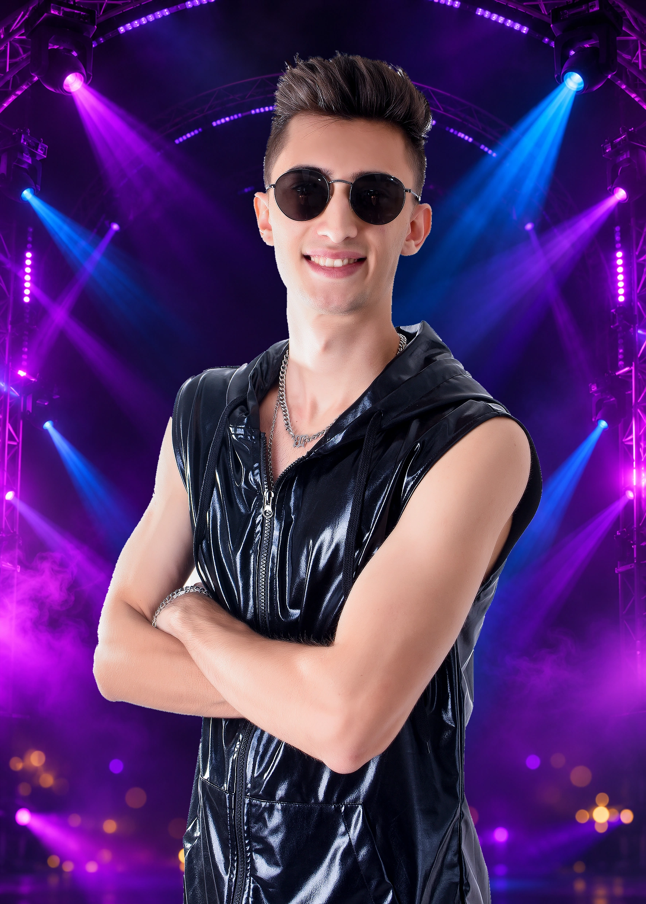

Fotos e material de divulgação
Fotos de shows, arquivos oficiais e materiais para produtores e contratantes. Tudo reunido em uma pasta.
ACESSAR PRESS KIT
SOBRE
A música faz parte da minha história desde os 15 anos. Dos primeiros palcos com bandas da região à carreira como DJ, encontrei na música uma forma de criar conexão. Hoje, minhas produções e remixes também fazem parte dos meus sets, trazendo uma identidade própria a cada apresentação.
CONHEÇA MINHA HISTÓRIACONTEÚDO OFICIAL
Fotos de shows, arquivos oficiais e materiais para produtores e contratantes. Tudo reunido em uma pasta.
ACESSAR PRESS KITConfira novidades, bastidores, fotos e vídeos e acompanhe o dia a dia do Flavinnho.
VER INSTAGRAM